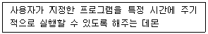
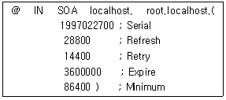
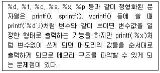

인터넷보안전문가-2급 (2017-10-29 기출문제)
1과목: 정보보호개론
1. SET(Secure Electronic Transaction)의 기술구조에 대한 설명으로 옳지 않은 것은?
- SET은 기본적으로 X.509 전자증명서에 기술적인 기반을 두고 있다.
- SET에서 제공하는 인터넷에서의 안전성은 모두 암호화에 기반을 두고 있고, 이 암호화 기술은 제 3자가 해독하기가 거의 불가능하다.
- 암호화 알고리즘에는 공개키 암호 시스템만 사용된다.
- 이 방식은 n명이 인터넷상에서 서로 비밀통신을 할 경우 'n(n-1)/2' 개 키를 안전하게 관리해야 하는 문제점이 있다.
(정답률: 76%)

2. 5명의 사용자가 대칭키(Symmetric Key)를 사용하여 주고받는 메시지를 암호화하기 위해서 필요한 키의 총 개수는?
- 2개
- 5개
- 7개
- 10개
(정답률: 80%)
3. IP 계층에서 보안 서비스를 제공하기 위한 IPsec에서 제공되는 보안 서비스로 옳지 않은 것은?
- 부인방지 서비스
- 무연결 무결성 서비스
- 데이터 원천 인증
- 기밀성 서비스
(정답률: 43%)
4. 안전한 전자지불을 위하여 수립된 보안 대책과 사용 용도에 대한 연결이 옳지 않은 것은?
- PGP(Pretty Good Privacy) - 메일 보안 시스템
- PEM(Privacy-enhanced Electronic Mail) - 보안 메일의 IETF 표준
- Kerberos - 사용자 인증
- SNMPv2 - Web 문서 관리
(정답률: 74%)
5. 이산대수 문제에 바탕을 두며 인증메시지에 비밀 세션키를 포함하여 전달 할 필요가 없고 공개키 암호화 방식의 시초가 된 키 분배 알고리즘은?
- RSA 알고리즘
- DSA 알고리즘
- MD-5 해쉬 알고리즘
- Diffie-Hellman 알고리즘
(정답률: 71%)
6. 전용 해시 알고리즘 중 해시값을 128비트에서 256비트까지 32비트 단위로 가변적으로 할 수 있고 라운드 수 역시 3에서 5사이를 선택할 수 있는 것은?
- MD4
- MD5
- SHA-1
- HAVAL
(정답률: 52%)
7. RSA 암호화 알고리즘에 대한 설명으로 옳지 않은 것은?
- 공개키 암호화 알고리즘 중 하나이다.
- Rivest 암호화, Adleman이 개발하였다.
- 다른 암호화 방식에 비해 계산량이 적어, 저사양의 휴대기기에 주로 사용된다.
- 전자서명에 이용된다.
(정답률: 70%)
8. Kerberos의 용어 설명 중 옳지 않은 것은?
- AS : Authentication Server
- KDC : Kerbers 인증을 담당하는 데이터 센터
- TGT : Ticket을 인증하기 위해서 이용되는 Ticket
- Ticket : 인증을 증명하는 키
(정답률: 67%)
9. SEED(128 비트 블록 암호 알고리즘)의 특성으로 옳지 않은 것은?
- 데이터 처리단위는 8, 16, 32 비트 모두 가능하다.
- 암ㆍ복호화 방식은 공개키 암호화 방식이다.
- 입출력의 크기는 128 비트이다.
- 라운드의 수는 16 라운드이다.
(정답률: 73%)
10. 응용계층 프로토콜로 옳지 않은 것은?
- SMTP
- FTP
- Telnet
- TCP
(정답률: 73%)
2과목: 운영체제
11. 파일 퍼미션이 현재 664인 파일이 '/etc/file1.txt' 라는 이름으로 저장되어 있다. 이 파일을 batman 이라는 사용자의 홈디렉터리에서 ln 명령을 이용하여 'a.txt' 라는 이름으로 심볼릭 링크를 생성하였는데, 이 'a.txt' 파일의 퍼미션 설정상태는?
- 664
- 777
- 775
- 700
(정답률: 63%)
12. Linux의 기본 명령어 'man'의 의미는?
- 명령어에 대한 사용법을 알고 싶을 때 사용하는 명령어
- 윈도우나 쉘을 빠져 나올 때 사용하는 명령어
- 지정한 명령어가 어디에 있는지 경로를 표시
- 기억된 명령어를 불러내는 명령어
(정답률: 82%)
13. DHCP(Dynamic Host Configuration Protocol) Scope 범위 혹은 주소 풀(Address Pool)을 만드는데 주의할 점에 속하지 않는 것은?
- 모든 DHCP 서버는 최소한 하나의 DHCP 범위를 가져야 한다.
- DHCP 주소 범위에서 정적으로 할당된 주소가 있다면 해당 주소를 제외해야 한다.
- 네트워크에 여러 DHCP 서버를 운영할 경우에는 DHCP 범위가 겹치지 않아야 한다.
- 하나의 서브넷에는 여러 개의 DHCP 범위가 사용될 수 있다.
(정답률: 76%)
14. Linux 파일 시스템의 기본 구조 중 파일에 관한 중요한 정보를 싣는 곳은?
- 부트 블록
- i-node 테이블
- 슈퍼 블록
- 실린더 그룹 블록
(정답률: 78%)
15. ifconfig 명령으로 IP Address를 설정할 때 사용하는 값으로 옳지 않은 것은?
- Subnet Mask
- Broadcast Address
- Network Address
- Unicast Address
(정답률: 74%)
16. VI(Visual Interface) 명령어 중에서 변경된 내용을 저장한 후 종료하고자 할 때 사용해야 할 명령어는?
- :wq
- :q!
- :e!
- $
(정답률: 81%)
17. Windows Server 환경에서 기본 그룹계정의 설명 중 옳지 않은 것은?
- Users - 시스템 관련 사항을 변경할 수 없는 일반 사용자
- Administrators - 컴퓨터/도메인에 모든 액세스 권한을 가진 관리자
- Guest - 파일을 백업하거나 복원하기 위해 보안 제한을 변경할 수 있는 관리자
- Power Users - 일부 권한을 제외한 관리자 권한을 가진 고급 사용자
(정답률: 82%)
18. Windows Server에서 제공하고 있는 VPN 프로토콜인 L2TP(Layer Two Tunneling Protocol)에 대한 설명 중 옳지 않은 것은?
- IP 기반의 네트워크에서만 사용가능하다.
- 헤드 압축을 지원한다.
- 터널 인증을 지원한다.
- IPsec 알고리즘을 이용하여 암호화 한다.
(정답률: 65%)
19. DNS(Domain Name System) 서버를 처음 설치하고 가장 먼저 만들어야 하는 데이터베이스 레코드는?
- CNAME
- HINFO(Host Information)
- PTR(Pointer)
- SOA(Start Of Authority)
(정답률: 71%)
20. Linux에서 사용자의 'su' 명령어 시도 기록을 볼 수 있는 로그는?
- /var/log/secure
- /var/log/messages
- /var/log/wtmp
- /var/log/lastlog
(정답률: 66%)
21. 파일의 허가 모드가 '-rwxr---w-'이다. 다음 설명 중 옳지 않은 것은?
- 소유자는 읽기 권한, 쓰기 권한, 실행 권한을 갖는다.
- 동일한 그룹에 속한 사용자는 읽기 권한만을 갖는다.
- 다른 모든 사용자는 쓰기 권한 만을 갖는다.
- 동일한 그룹에 속한 사용자는 실행 권한을 갖는다.
(정답률: 75%)
22. Linux에서 'ls -al' 명령에 의하여 출력되는 정보로 옳지 않은 것은?
- 파일의 접근허가 모드
- 파일 이름
- 소유자명, 그룹명
- 파일의 소유권이 변경된 시간
(정답률: 75%)
23. SSL 레코드 계층의 서비스를 사용하는 세 개의 특정 SSL 프로토콜 중의 하나이며 메시지 값이 '1'인 단일 바이트로 구성되는 것은?
- Handshake 프로토콜
- Change cipher spec 프로토콜
- Alert 프로토콜
- Record 프로토콜
(정답률: 60%)
24. Linux에서 프로세스 실행 우선순위를 바꿀 수 있는 명령어는?
- chps
- reserv
- nice
- top
(정답률: 67%)
25. 다음이 설명하는 Linux 시스템의 데몬은?

- crond
- atd
- gpm
- amd
(정답률: 72%)
26. Linux 구조 중 다중 프로세스·다중 사용자와 같은 주요 기능을 지원·관리하는 것은?
- Kernel
- Disk Manager
- Shell
- X Window
(정답률: 70%)
27. 'shutdown -r now' 와 같은 효과를 내는 명령어는?
- halt
- reboot
- restart
- poweroff
(정답률: 76%)
28. 다음 명령어 중에서 데몬들이 커널상에서 작동되고 있는지 확인하기 위해 사용하는 것은?
- domon
- cs
- cp
- ps
(정답률: 71%)
29. VI(Visual Interface) 에디터에서 편집행의 줄번호를 출력해주는 명령은?
- :set nobu
- :set nu
- :set nonu
- :set showno
(정답률: 80%)
30. 아래는 DNS Zone 파일의 SOA 레코드 내용이다. SOA 레코드의 내용을 보면 5 개의 숫자 값을 갖는데, 그 중 두 번째 값인 Refresh 값의 역할은?

- Primary 서버와 Secondary 서버가 동기화 하게 되는 기간이다.
- Zone 내용이 다른 DNS 서버의 cache 안에서 살아남을 기간이다.
- Zone 내용이 다른 DNS 서버 안에서 Refresh 될 기간이다.
- Zone 내용이 Zone 파일을 갖고 있는 서버 내에서 자동 Refresh 되는 기간이다.
(정답률: 66%)
3과목: 네트워크
31. ICMP(Internet Control Message Protocol)의 메시지 타입으로 옳지 않은 것은?
- Source Quench
- Port Destination Unreachable
- Echo Request, Echo Reply
- Timestamp Request, Timestamp Reply
(정답률: 48%)
32. FDDI(Fiber Distributed Data Interface)에 대한 설명으로 옳지 않은 것은?
- 100Mbps급의 데이터 속도를 지원하며 전송 매체는 광섬유이다.
- 일차 링과 이차 링의 이중 링으로 구성된다.
- LAN과 LAN 사이 혹은 컴퓨터와 컴퓨터 사이를 광섬유 케이블로 연결하는 고속 통신망 구조이다.
- 매체 액세스 방법은 CSMA/CD 이다.
(정답률: 59%)
33. 프로토콜 스택에서 가장 하위 계층에 속하는 것은?
- IP
- TCP
- HTTP
- UDP
(정답률: 76%)
34. Star Topology에 대한 설명 중 올바른 것은?
- 시작점과 끝점이 존재하지 않는 폐쇄 순환형 토폴로지이다.
- 모든 노드들에 대해 간선으로 연결한 형태이다.
- 연결된 PC 중 하나가 다운되어도 전체 네트워크 기능은 수행된다.
- 라인의 양쪽 끝에 터미네이터를 연결해 주어야 한다.
(정답률: 71%)
35. OSI 7 Layer 구조의 계층 7에서 계층 4를 차례대로 나열한 것은?
- 응용(Application) - 세션(Session) - 표현(Presentation) - 전송(Transport)
- 응용(Application) - 표현(Presentation) - 세션(Session) - 전송(Transport)
- 응용(Application) - 표현(Presentation) - 세션(Session) - 네트워크(Network)
- 응용(Application) - 네트워크(Network) - 세션(Session) - 표현(Presentation)
(정답률: 79%)
36. TCP/IP 프로토콜을 이용해 클라이언트가 서버의 특정 포트에 접속하려고 할 때 서버가 해당 포트를 열고 있지 않다면 응답 패킷의 코드 비트에 특정 비트를 설정한 후 보내 접근할 수 없음을 통지하게 된다. 다음 중 클라이언트가 서버의 열려있지 않은 포트에 대한 접속에 대해 서버가 보내는 응답 패킷의 코드 비트 내용이 올바른 것은?
- SYN
- ACK
- FIN
- RST
(정답률: 39%)
37. 디지털 데이터를 디지털 신호 인코딩(Digital Signal Encoding)하는 방법으로 옳지 않은 것은?
- NRZ(Non Return to Zero)
- Manchester
- PCM(Pulse Code Modulation)
- Differential Manchester
(정답률: 48%)
38. 라우터 명령어 중 NVRAM에서 RAM으로 configuration file을 copy하는 명령어는?
- copy flash start
- copy running-config startup-config
- copy startup-config running-config
- wr mem
(정답률: 68%)
39. 다음 203.214.3.0/26 Subnet의 호스트에 사용할 수 있는 IP Address로 맞는 것은?
- 203.214.3.0
- 203.214.3.64
- 203.214.3.63
- 203.214.3.1
(정답률: 50%)
40. 다음 중 OSI 7 Layer의 각 Layer 별 Data 형태로서 옳지 않은 것은?
- Transport Layer-> Segment
- Network Layer-> Packet
- Datalink Layer-> Fragment
- Physical Layer-> bit
(정답률: 73%)
41. TCP와 UDP의 차이점 설명으로 옳지 않은 것은?
- 데이터 전송형태로 TCP는 Connection Oriented방식이고 UDP는 Connectionless방식이다.
- TCP가 UDP보다 데이터 전송 속도가 빠르다.
- TCP가 UDP보다 신뢰성이 높다.
- TCP가 UDP에 비해 각종 제어를 담당하는 Header 부분이 커진다.
(정답률: 70%)
42. 다음 중 데이터 링크 계층의 기능에 해당하지 않는 것은?
- 데이터 링크 커넥션의 설정과 해제
- 전송 데이터의 프레임화
- 물리매체에 비트 열 전송
- 전송확인 및 흐름제어
(정답률: 50%)
43. 32bit IP Address를 48bit 이더넷 주소로 변환하는 프로토콜은?
- ARP
- RARP
- IGMP
- ICMP
(정답률: 63%)
44. SNMP(Simple Network Management Protocol)에 대한 설명으로 옳지 않은 것은?
- RFC(Request For Comment) 1157에 명시되어 있다.
- 현재의 네트워크 성능, 라우팅 테이블, 네트워크를 구성하는 값들을 관리한다.
- TCP 세션을 사용한다.
- 상속이 불가능하다.
(정답률: 54%)
45. 다음은 OSPF의 라우터 ID에 관한 설명으로 옳지 않은 것은?
- OSPF 선언 당시 Loopback Interface가 존재하면, 가장 높은 Loopback Interface의 IP Address가 라우터 ID가 된다.
- OSPF 선언 당시 Loopback Interface가 존재하지 않으면, UP된 Physical Interface 중 가장 높은 IP Address가 라우터가 된다.
- DR/BDR 선출시 Tie-Breaker로서의 역할을 한다.
- 라우터에 인위적으로 부여하는 것은 불가능하다.
(정답률: 56%)
4과목: 보안
46. 다음 중 파일 보호 방식에서 사용되는 보호 기법으로 옳지 않은 것은?
- 파일 감춤법
- 접근 리스트법
- 암호법
- 파일의 명명법
(정답률: 51%)
47. 침입방지시스템(Intrusion Prevention System)의 단점으로 잘못된 것은?
- 악의적인 내부 사용자로부터 시스템 정보를 보호할 수 없다.
- 자신을 통하지 않는 접속으로부터 시스템을 보호할 수 없다.
- 완전히 새로운 형태의 위협에 대해서는 방어할 수 없다.
- 악의적인 대량의 패킷 정보에 대해서는 시스템을 보호할 수 없다.
(정답률: 54%)
48. 버퍼 오버플로우(Buffer Overflow) 개념으로 옳지 않은 것은?
- 스택의 일정부분에 익스플로러 코드(Explorer Code)를 삽입하고 어떤 프로그램의 리턴 어드레스(Return Address)를 익스플로러 코드가 위치한 곳으로 돌린다.
- 대체적으로 문자열에 대한 검사를 하지 않아서 일어나는 경우가 많다.
- 소유자가 root인 Setuid가 걸린 응용프로그램인 경우 익스플로러 코드를 이용 root의 권한을 획득할 수 있다.
- Main 프로그램과 Sub 프로그램의 경쟁관계와 Setuid를 이용하여 공격하는 패턴이 존재한다.
(정답률: 48%)
49. TCPdump 가 동작하기 위해 필요한 라이브러리는?
- ncurse
- libpcap
- libmod
- modperl
(정답률: 59%)
50. 해킹에 성공한 후 해커들이 하는 행동의 유형으로 옳지 않은 것은?
- 추후에 침입이 용이하게 하기 위하여 트로이 목마 프로그램을 설치한다.
- 서비스 거부 공격 프로그램을 설치한다.
- 접속 기록을 추후의 침입을 위하여 그대로 둔다.
- 다른 서버들을 스캔 프로그램으로 스캔하여 취약점을 알아낸다.
(정답률: 81%)
51. Linux에서 Nmap의 옵션 중 상대방의 OS를 알아내는 옵션은?
- [root@icqa bin]#./nmap -O www.target.com
- [root@icqa bin]#./nmap -I www.target.com
- [root@icqa bin]#./nmap -sS www.target.com
- [root@icqa bin]#./nmap -sP www.target.com
(정답률: 75%)
52. Linux에서 root만 로그인하고 나머지 사용자 계정은 로그인이 불가능하게 하는 설정 파일은?
- /etc/nologin
- /etc/hosts.allow
- /etc/hosts.deny
- /bin/more
(정답률: 64%)
53. IP Spoofing을 막기 위한 방법으로 옳지 않은 것은?
- Sequence Number를 유추하지 못하도록 Random하게 발생시키도록 한다.
- IP로 인증하는 서비스는 사용하지 않는다.
- Secure Shell과 같은 암호화된 Protocol을 사용한다.
- 내부 사용자끼리의 IP Spoofing을 막기 위해 Router에서 Source Routing을 허용하지 않는다.
(정답률: 45%)
54. 방화벽의 주요 기능으로 옳지 않은 것은?
- 접근제어
- 사용자 인증
- 로깅
- 프라이버시 보호
(정답률: 65%)
55. 네트워크 취약성 공격으로 옳지 않은 것은?
- Scan 공격
- IP Spoofing 공격
- UDP 공격
- Tripwire 공격
(정답률: 70%)
56. Linux 시스템에서 Rootkit의 역할로 옳지 않은 것은?
- 불법적인 권한을 다시 획득하는 역할을 수행한다.
- 시스템 상에서 침입자의 흔적을 지워주는 역할을 수행한다.
- 정상적인 프로그램처럼 보이지만 내부에 악의적인 코드가 내장되어있다.
- 자가 복제를 통해 자신의 존재를 숨기면서 다른 시스템과의 접속을 시도한다.
(정답률: 53%)
57. SSL(Secure Socket Layer)에서 제공하는 보안 서비스로 옳지 않은 것은?
- 두 응용간의 기밀성 서비스
- 클라이언트와 서버의 상호 인증
- 메시지 무결성 서비스
- 루트 CA 키 갱신
(정답률: 61%)
58. 스머프 공격(Smurf Attack)에 대한 설명으로 올바른 것은?
- 두 개의 IP 프래그먼트를 하나의 데이터 그램인 것처럼 하여 공격 대상의 컴퓨터에 보내면, 대상 컴퓨터가 받은 두 개의 프래그먼트를 하나의 데이터 그램으로 합치는 과정에서 혼란에 빠지게 만드는 공격이다.
- 서버의 버그가 있는 특정 서비스의 접근 포트로 대량의 문자를 입력하여 전송하면, 서버의 수신 버퍼가 넘쳐서 서버가 혼란에 빠지게 만드는 공격이다.
- 서버의 SMTP 서비스 포트로 대량의 메일을 한꺼번에 보내고, 서버가 그것을 처리하지 못하게 만들어 시스템을 혼란에 빠지게 하는 공격이다.
- 출발지 주소를 공격하고자 하는 컴퓨터의 IP Address로 지정한 후, 패킷신호를 네트워크 상의 컴퓨터에 보내게 되면, 패킷을 받은 컴퓨터들이 반송 패킷을 다시 보내게 되는데, 이러한 원리를 이용하여 대상 컴퓨터에 갑자기 많은 양의 패킷을 처리하게 함으로써 시스템을 혼란에 빠지게 하는 공격이다.
(정답률: 73%)
59. 다음 중 시스템 로그데몬(syslogd)의 설명으로 옳지 않은 것은?
- 시스템 로그 데몬의 설정파일 위치는 '/etc/syslog.conf'이다.
- 로그 데몬의 실행방법은 '/etc/rc.d/init.d/syslog start'이다.
- 시스템 로그 데몬의 위치는 '/bin/syslogd' 이다.
- 로그 데몬의 종료방법은 '/etc/rc.d/init.d/syslog stop'이다.
(정답률: 60%)
60. 다음 설명하는 것은 무엇을 의미하는가?

- sniffing
- IP Spoofing
- Race Condition
- Format String Bug
(정답률: 61%)